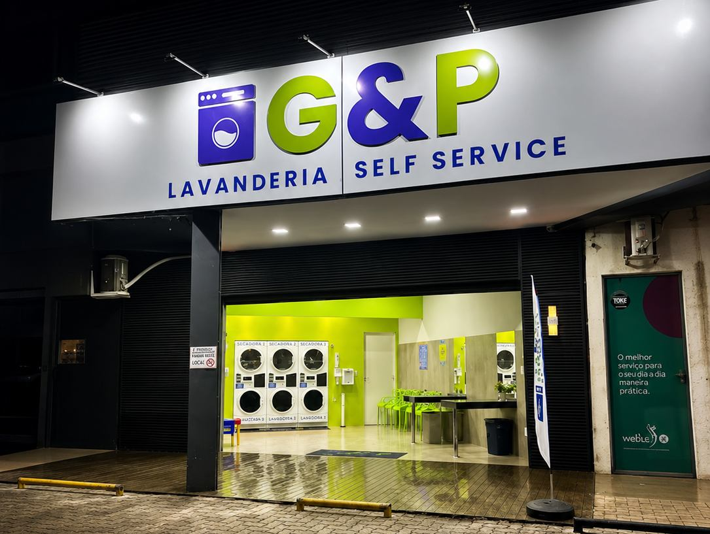
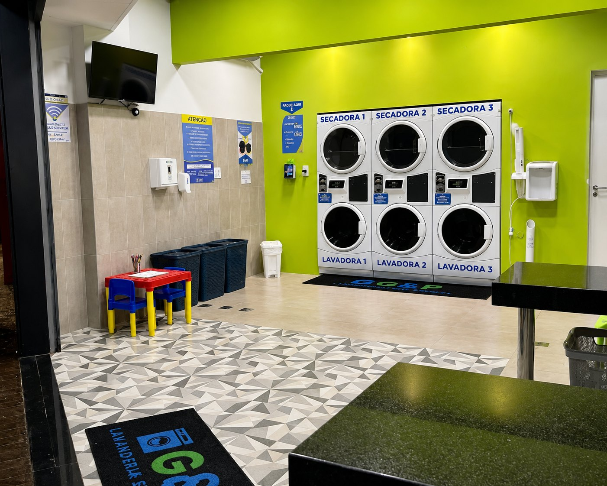
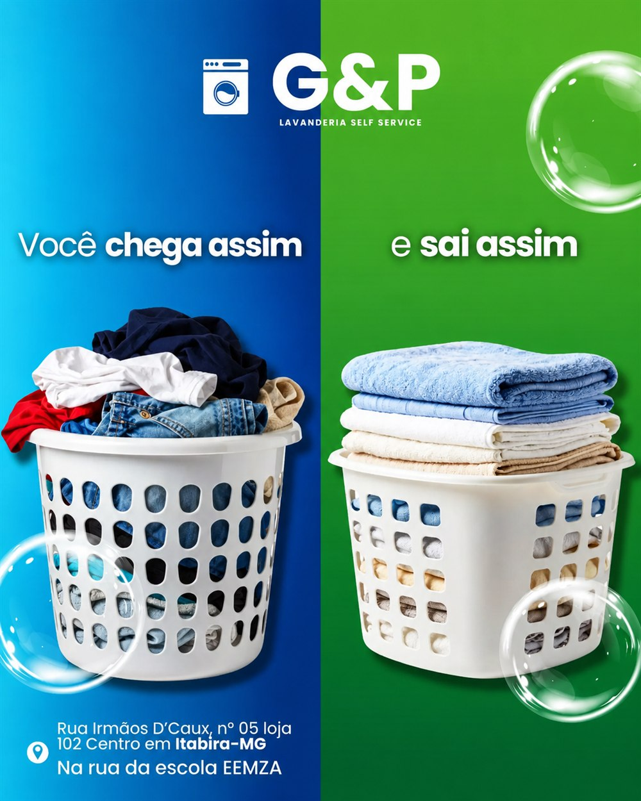

★★★★★
"Excelente, se você é de fora da cidade e busca agilidade para lavar e secar tuas peças, é o lugar. O dono também super solícito!!"


Self service no Centro de Itabira
Role para entrar ↓
Aberto todos os dias, das 05h às 00h
23 avaliações no Google
Clientes satisfeitos em cada lavagem
Rua Irmãos D'Caux, 05 — Centro, Itabira/MG
Por que a G&P
Enquanto a roupa lava e seca, você trabalha, descansa ou resolve outra coisa — sem correr contra o tempo nem contra o varal.
Ar-condicionado o ano inteiro
Internet liberada pra quem espera
Aproveite o tempo de espera
Não precisa levar sabão nem amaciante
Mais potência que máquina de casa
Mesinha e cadeiras pra criançada brincar
O resultado
Lavagem e secagem sem enrolação — sem sujar a casa, sem esperar o dia render pra secar no varal.

O que fazemos
Roupa do dia a dia lavada e seca em até 60 minutos, com produto de qualidade já incluso no preço.
Peças grandes que não cabem na máquina de casa. Aqui saem limpas e secas com a força das máquinas industriais.
Máquinas liberadas pra você usar no seu ritmo, sem depender de horário de terceiro pra pegar a roupa pronta.
Preços e como funciona
Sem atendimento pra esperar, sem agendamento. Chega, paga no totem e usa a máquina.
Usamos OMO e Comfort lavanderia profissional nas lavagens — PH balanceado, hipoalergênico e com baixa formação de espuma. A combinação perfeita de limpeza, perfume e maciez pras suas roupas.
Conheça o espaço
Quem já lavou aqui
"Excelente, se você é de fora da cidade e busca agilidade para lavar e secar tuas peças, é o lugar. O dono também super solícito!!"
"Lavagem ótima, produtos de qualidade! Local super agradável com ar-condicionado, Wi-Fi e Tv. Indico!"
"Muito bom poder ter esse serviço aqui tão bem localizado. Resolve bem a questão da lavagem de roupas. Ambiente agradável e limpo."
"Deixo as roupas na maquina e posso sair tranquilamente para resolver outras necessidades."
"Como viajante melhor opção para quem está em viagem."
"Excelente estrutura. Roupas sai cheirosa. Lugar muito limpo."
Contato
Não precisa agendar — chega, coloca a roupa pra lavar e volta quando quiser.